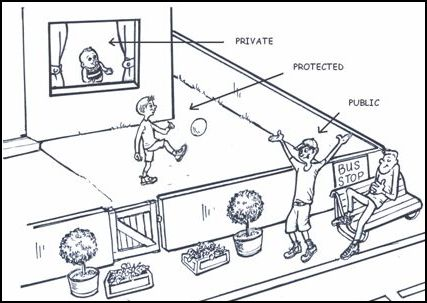
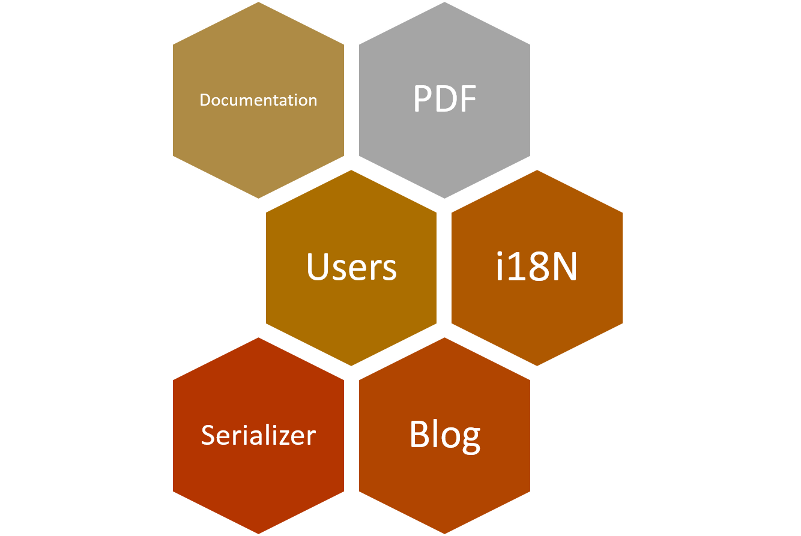

Symfony2 basics
Maxence POUTORD
Goals
- PHP OOP (recalls)
- Discovering the basics of Symfony2 and his components (Twig, Doctrine, ...)
- Realize a web app with Symfony2&MySQL
PHP OOP
POPO: Plain Old PHP Object
class Drink
{
protected $id;
protected $name;
protected $description;
public function __construct() {
//...
}
}
class Beer extends Drink
{
protected $alcohol;
protected $color;
protected $type;
public function __construct() {
//...
}
public function drinkIt() {
echo "glug glug";
}
}
Getter/Setter
class Beer
{
private $color;
//...
public function getColor() {
return $this->id;
}
public function setColor($color) {
$this->color = $color;
}
}
Instanciate new class
class Beer
{
//...
}
$myBeer = new Beer;
$myBeer->drinkIt(); //will output "glug glug"
$myBeer->setColor("blond");
$color = $myBeer->getColor();
Visibility
- public
- protected
- private

Further reading
Design Pattern: Singleton
class MySingleton
{
protected static $instance;
protected function __construct() { }
public static function getInstance()
{
if (!isset(self::$instance)) {
self::$instance = new self;
}
return self::$instance;
}
}
Why should I use Framework ?
- Velocity: work better (structuring developments) & faster (reusing generic modules, code generation...)
- Facilitate long-term maintenance
- Improve security
Symfony2

What is Symfony2 ?
« Symfony is a set of PHP Components, a Web Application framework, a Philosophy, and a Community — all working together in harmony. »
Why Symfony2 ?
- #1 in France ( employment)
- Use best practices
- Open Source
- Bundle: reusable components
- Development tools
Projects using Symfony: Drupal, Laravel, eZ Publish, Magento, BlaBlaCar, You****(You-Know-Who)
Bundle concept
- Bundle = Plugin
- "Everything is a bundle in Symfony"

Symfony2 MVC approach

Composer
- Tool for dependency management in PHP (Like node's npm, ruby's bundler...)

RTFM
Getting started
$ composer create-project symfony/framework-standard-edition my_project_name
Symfony2's components
Controller
Routing
Twig, a tamplate engine
Doctrine
Form component
Services (in nutshell)
Further tips...
Code generation
Useful commands
Useful tools
- Grunt/Gulp
- Mailcatcher
- Blackfire.io
Useful tools
- Grunt/Gulp
- Mailcatcher
- Blackfire.io